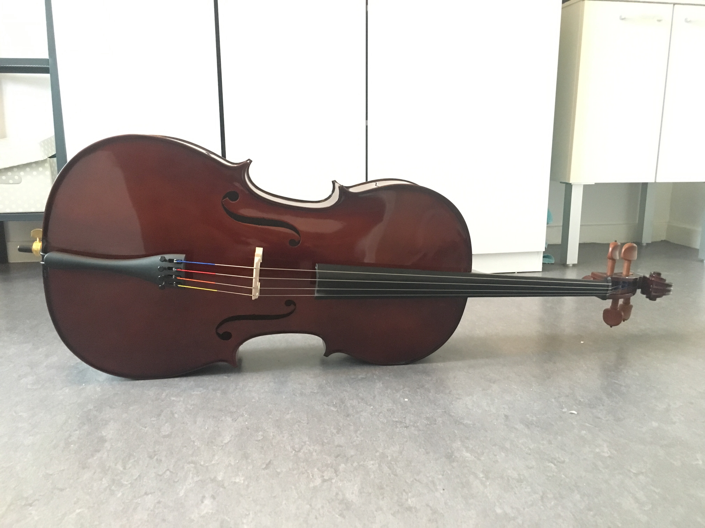

So, here they don't really have the same traditions in terms of freshers week as we do back in the UK. There were a few nights out in bars during the week including one called 'Madame Moustache' which was in a very cool retro pub, but not every night which I preferred.
There was also a city trip to Antwerp on Wednesday but by the time I tried to register the places had been filled. Instead, 6 other Erasmus students and I decided to just go ourselves. Trains here are really cheap and it's less than an hour from Brussels to Antwerp (or 'Anvers' if you use the French name). We had some food and went on one of those free tours you get in most major cities. It was incredibly beautiful, a little similar to the older parts of Brussels but being close to the border with Holland it definitely had a bit more of a Dutch feel - especially because the main language spoken there is Flemmish not French.
Also, during the week my flat mates started moving in - and every single person living in my block that I've met so far is Spanish. Now that's 4 floors of 14 which is quite a lot of people! When speaking to someone who knows Brussels a little better than I do, I learned that Village Patrimmonia is known for being being popular with Spanish speaking students - no one told me! This would be great if I was doing my Joint Honours in French and Spanish but seeing as a few years ago I chose Italian I'm not finding it as helpful. However I have started to learn a few phrases so who knows, maybe by the end of the year I'll speak Spanish just as fluently as French. 
On Thursday there was something called JANE or 'Journée d'Accueil des Nouveaux Étudiants' (Welcome day for new students). I had a tour of the campus and saw all the stands for the various societies. I found another brilliant student deal at the sports stall because students here get an entire gym membership including membership to any sports club for the whole year for just 50 euros
I also found the Orchestra stand, or rather one of my new friends pushed me towards it, and I'm very glad she did. I had previously decided that I wouldn't bother taking my cello on my year abroad because it was just too stressful to try and figure out how to fly it here. I thought renting would be difficult and so decided not to join any musical societies for a year and trying something new. Well that plan didn't last because on Saturday I found myself in a rental shop and now there is a beautiful new cello in my bedroom from a shop called Azzato.
It was a little difficult but renting this cello was my first all French encounter with someone that went beyond using just the basics. Thankfully the man in the shop didn't automatically switch to English when I began struggling because when people do that it's frustrating as I don't get the opportunity to improve. So the first orchestra rehearsal is on Monday evening and I'm very excited for it!
Things started to get serious on Friday when I had a 2 hour welcome presentation at my faculty and I had to do a French test to determine what level I'm at and what group I'll be put into. It went well but it's a lot more difficult than I expected. I understood everything that was said but I have to concentrate as hard as I can to be able to do this. If I zone out for 1 second I'm lost - so lectures next week are definitely gonna be tough at the start but again it's the only way to improve. I think I'm just going to have a permanent headache for the next few weeks!
À bientôt!